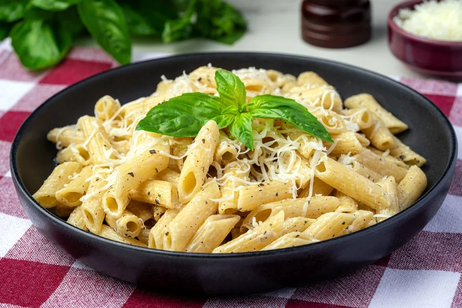

CREAMY PASTA

Description
Creamy pasta is a delicious and comforting dish that combines tender pasta with a rich and velvety sauce. The sauce, made with heavy cream and Parmesan cheese, envelops each piece of pasta in a luscious coating that is both smooth and flavorful. The addition of garlic sautéed in olive oil adds a subtle depth of flavor, making this dish a perfect blend of simplicity and indulgence. Whether enjoyed on its own or paired with a side of fresh salad, creamy pasta is a satisfying meal that is sure to please any palate. Garnished with fresh parsley for a touch of color and freshness, this dish is as visually appealing as it is delicious.
Ingredients
for 2 or 3 servings
- 200g pasta (any type you prefer)
- 1 tablespoon olive oil
- 1 clove garlic, minced
- 1 cup heavy cream
- 1/2 cup grated Parmesan cheese
- Salt and pepper to taste
- Fresh parsley, chopped (optional)
Instructions
- Cook Pasta: Boil a large pot of salted water. Add the pasta and cook according to the package instructions until al dente. Drain and set aside.
- Prepare Sauce: In a large skillet, heat the olive oil over medium heat. Add the minced garlic and sauté for 1-2 minutes until fragrant.
- Add Cream: Pour in the heavy cream and bring to a simmer. Cook for 2-3 minutes, stirring occasionally.
- Add Cheese: Stir in the grated Parmesan cheese until melted and the sauce thickens. Season with salt and pepper to taste.
- Combine: Add the cooked pasta to the skillet and toss to coat the pasta evenly with the sauce.
- Serve: Garnish with chopped parsley if desired and serve immediately.
Enjoy your creamy pasta!
Back to Recipes